<div id="readme" class="md" data-path="README.md"><article class="markdown-body entry-content container-lg" itemprop="text">
<div align="center" dir="auto">
<p dir="auto"><themed-picture data-catalyst-inline="true"><picture><source media="(prefers-color-scheme: dark)" srcset="assets/panels/hero-dark.png">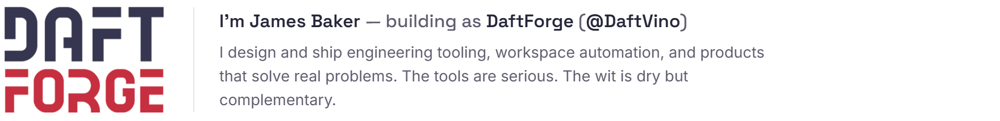</picture></themed-picture></p>
</div>
<p dir="auto"><a target="_blank" rel="noopener noreferrer" href="assets/panels/stats.png">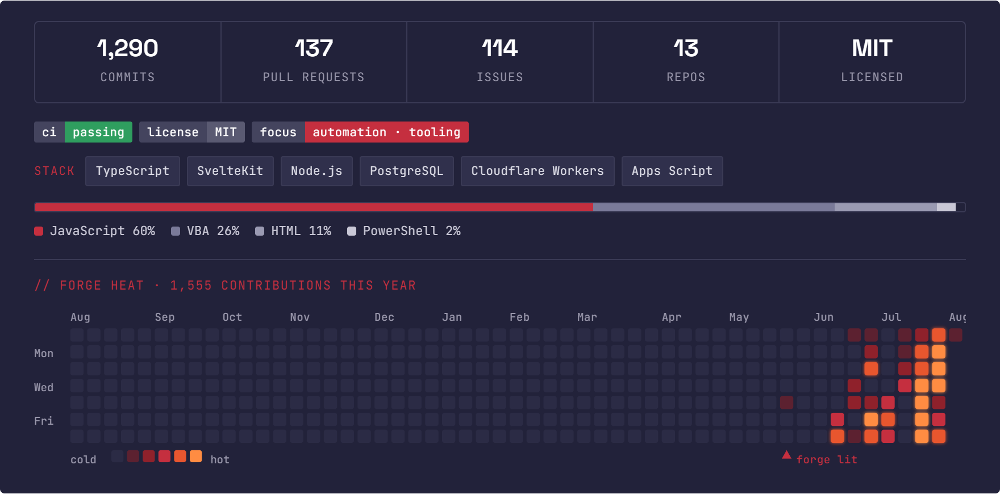</a></p>
<p dir="auto"><a target="_blank" rel="noopener noreferrer" href="assets/panels/k01.png"></a></p>
<p dir="auto"><themed-picture data-catalyst-inline="true"><picture><source media="(prefers-color-scheme: dark)" srcset="assets/panels/cap-dark.png">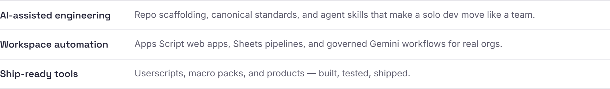</picture></themed-picture></p>
<p dir="auto"><a target="_blank" rel="noopener noreferrer" href="assets/panels/k02.png"></a></p>
<p align="center" dir="auto">
<a href="https://github.com/DaftVino/daftplate"><themed-picture data-catalyst-inline="true"><picture><source media="(prefers-color-scheme: dark)" srcset="assets/panels/tile-daftplate-dark.png">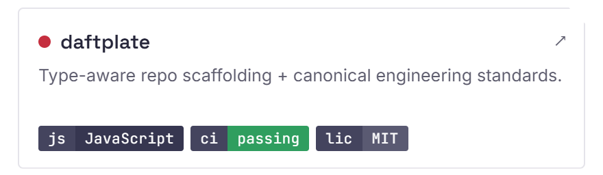</picture></themed-picture></a>
<a href="https://github.com/DaftVino/daftkit"><themed-picture data-catalyst-inline="true"><picture><source media="(prefers-color-scheme: dark)" srcset="assets/panels/tile-daftkit-dark.png">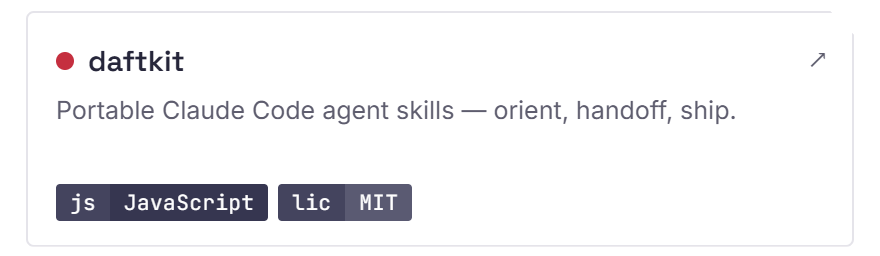</picture></themed-picture></a>
<a href="https://github.com/DaftVino/daft-gemini-playbook"><themed-picture data-catalyst-inline="true"><picture><source media="(prefers-color-scheme: dark)" srcset="assets/panels/tile-daft-gemini-playbook-dark.png">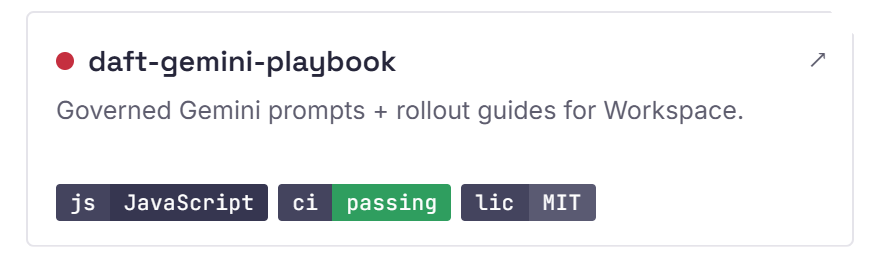</picture></themed-picture></a>
<a href="https://github.com/DaftVino/sheetweaver-webapp"><themed-picture data-catalyst-inline="true"><picture><source media="(prefers-color-scheme: dark)" srcset="assets/panels/tile-sheetweaver-webapp-dark.png">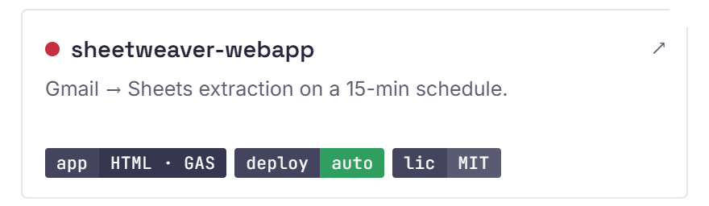</picture></themed-picture></a>
<a href="https://github.com/DaftVino/torn-bookie-live-scores"><themed-picture data-catalyst-inline="true"><picture><source media="(prefers-color-scheme: dark)" srcset="assets/panels/tile-torn-bookie-live-scores-dark.png">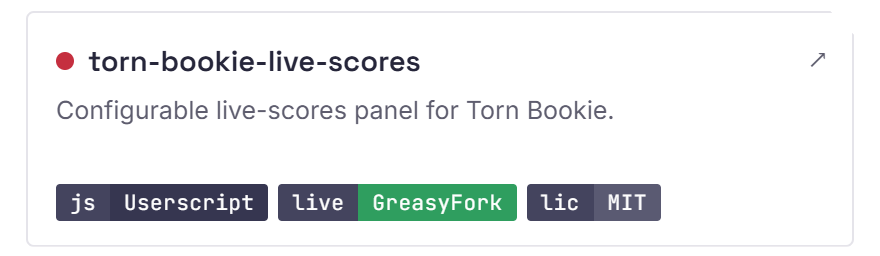</picture></themed-picture></a>
<a href="https://github.com/DaftVino/sheetforge"><themed-picture data-catalyst-inline="true"><picture><source media="(prefers-color-scheme: dark)" srcset="assets/panels/tile-sheetforge-dark.png">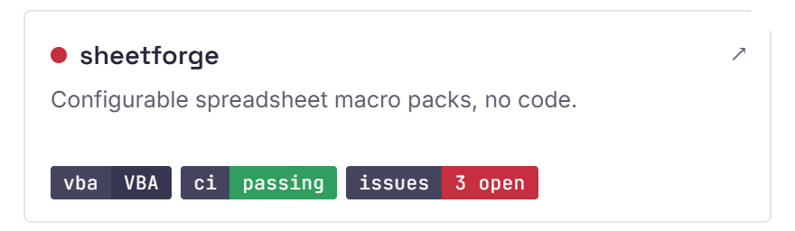</picture></themed-picture></a>
</p>
<p dir="auto"><a target="_blank" rel="noopener noreferrer" href="assets/panels/k03.png"></a></p>
<p align="center" dir="auto">
<a href="https://daftforge.com/tools/daft-cal/" rel="nofollow"><themed-picture data-catalyst-inline="true"><picture><source media="(prefers-color-scheme: dark)" srcset="assets/panels/tile-daft-cal-dark.png">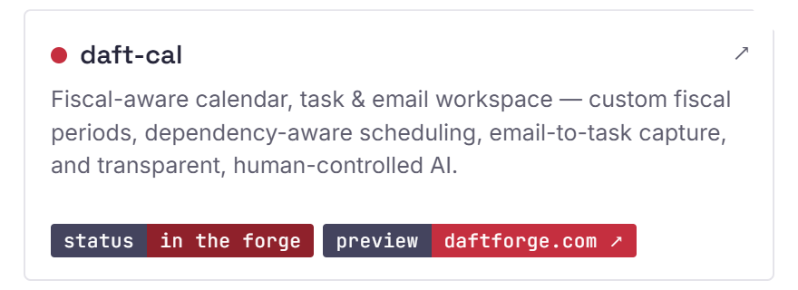</picture></themed-picture></a>
<a href="https://daftforge.com/tools/project-cobalt/" rel="nofollow"><themed-picture data-catalyst-inline="true"><picture><source media="(prefers-color-scheme: dark)" srcset="assets/panels/tile-project-cobalt-dark.png">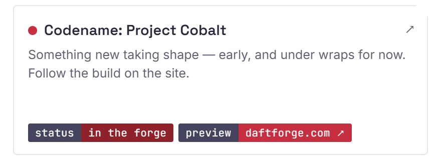</picture></themed-picture></a>
</p>
<p dir="auto"><a target="_blank" rel="noopener noreferrer" href="assets/panels/k04.png"></a></p>
<p dir="auto"><a href="https://donatr.ee/daftvino" rel="nofollow"><themed-picture data-catalyst-inline="true"><picture><source media="(prefers-color-scheme: dark)" srcset="assets/panels/support-dark.png"></picture></themed-picture></a></p>
<div align="center" dir="auto">
<p dir="auto"><themed-picture data-catalyst-inline="true"><picture><source media="(prefers-color-scheme: dark)" srcset="assets/brand/footer-dark.png"></picture></themed-picture></p>
<p dir="auto"><sub><a href="https://daftforge.com" rel="nofollow">daftforge.com</a>  ·  <a href="https://daftforge.com/contact/" rel="nofollow">Work with me</a>  ·  <a href="https://calendar.google.com/calendar/u/0/appointments/schedules/AcZssZ3ArXqwmG3jnBJlQQuIDbgoQ8WW45mED_ARsHeQq0CNjhTvBClW9IbRla0vkZiLtU4CqRIzhUeV" rel="nofollow">Book a call</a>  ·  <a href="https://www.linkedin.com/in/james-baker-9524b783" rel="nofollow">LinkedIn</a>  ·  <a href="mailto:daftvino@daftforge.com">Email</a>  ·  <a href="https://github.com/DaftVino">GitHub</a></sub></p>
</div>
</article></div>